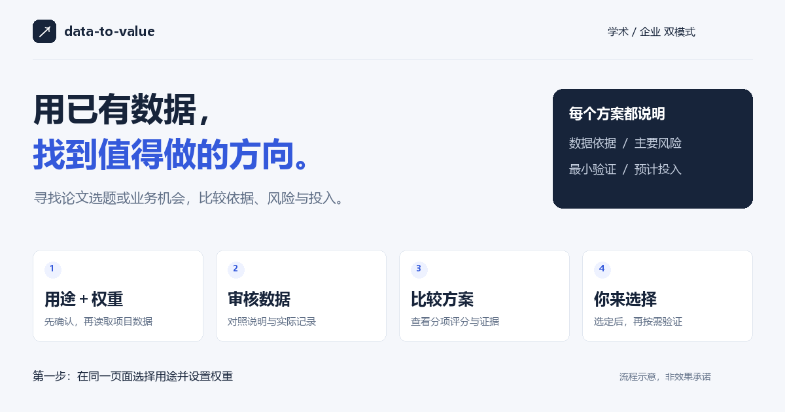
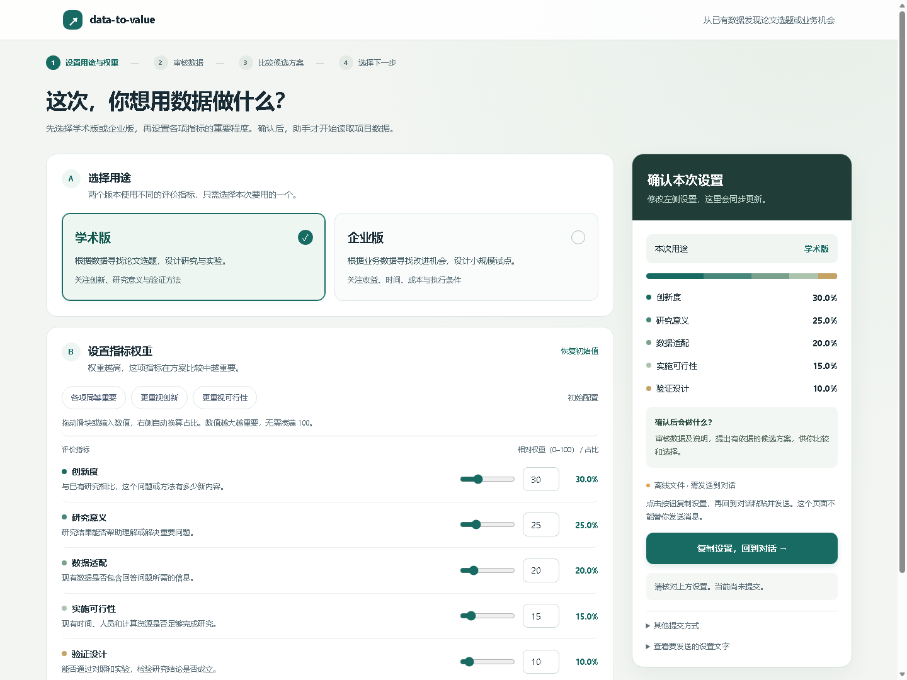
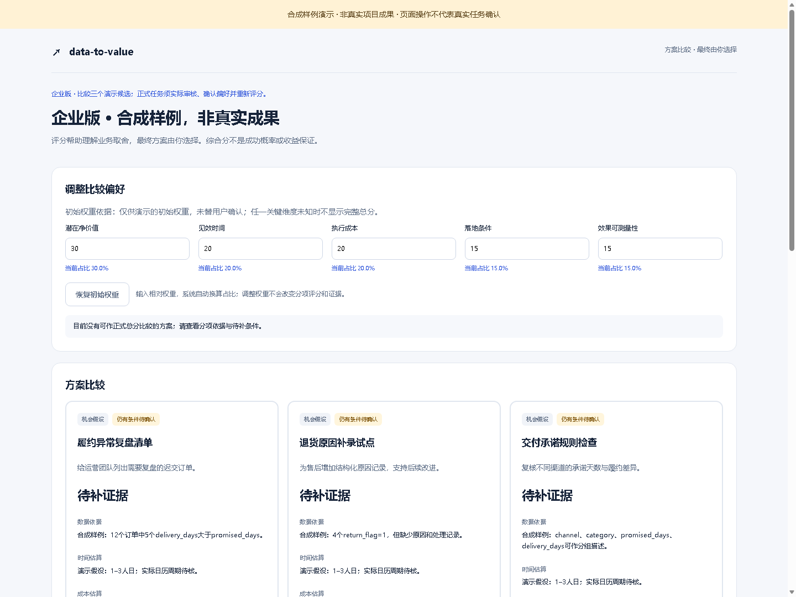

学术版
有数据集，希望找到值得研究、能够验证的问题。
- 基于数据提出候选研究问题
- 对照已有工作，说明新增量与缺口
- 比较可行性，设计最小验证

下载需授权 GitHub 账号。设置页可直接体验；离线预览不会提交到当前对话。
哪些字段和事实支持这个方向，哪些条件还需要核实。
根据数据精选不同方向，比较价值、可行性和投入，找到适合你的下一步。
最关键的未知、最低成本的检查，以及失败时如何调整。


看清每个方向的依据和投入，再由你选择。选定后，可继续验证、实施或写作。
按安装说明完成一次环境初始化，然后发送：
使用 data-to-value，帮我从这些数据发现值得做的方向。先让我选择学术版或企业版并确认权重，再审核数据、比较候选，由我选择方案。
面向电脑端数据工作流。支持常用表格、结构化数据和文档；按安装说明完成一次初始化，后续复用。